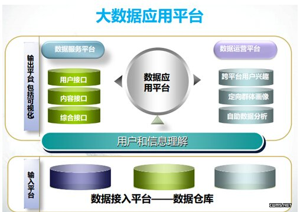

本文作者Armel Nene是大数据公司ETAPIX Global创始人，在软件开发和数据架构领域有多年经验，熟悉Java、SOA、BI、企业搜索和数据仓库，同时也是开源贡献者，曾在诺基亚、Tata等多家公司工作。
软件供应商的营销部门在大数据方面做得很好，并使之成为了主流。这意味着什么?如果使用大数据，那么我们可以实现任何承诺;实现充分的商业洞察力并打败竞争对手。然而，目前并没有像之前被广泛宣传的那样，存在大数据的成功实现。现在的问题是：为什么没有呢?显然，这些银弹企业已经看到了数十亿美元的投资，可是至今投资并没有回报。是谁的错?毕竟，企业不必宣传自己的内部流程或项目。在这一点上，我觉得这是由IT部门导致的。多数大数据项目的问题是由于技术人员(而不是业务人员)缺乏对于架构调整的理解和对未来商业的憧憬而造成的。
大数据项目的初步阶段与其他任何IT项目没有什么不同。项目都是由业务需求/要求所驱动的。这里不像黑客帝国那样，我们无法回答那些还没有被提出来的问题。在开始任何工作或讨论应该使用何种技术之前，所有的利益相关者都应该了解以下几方面：
- 企业的背景
- 企业的主要驱动力和组成部分
- 对于架构工作的要求
- 该架构的原则
- 所使用的框架
- 管理框架之间的关系
- 企业架构的成熟度
在大多数情况下，大数据项目包括：了解当前商业技术环境;在当前和未来的应用与服务方面：
- 战略和经营计划
- 经营方针、目标和主要驱动
- 正在实施的重要商业架构
- 管理和法律框架
- IT战略
- 预先存在的架构框架、组织模式和架构仓库
大数据连续/大数据项目不应该也永远不能被孤立。一个简单的事实就是大数据需要依靠其他系统存活，这意味着整个团队应该开辟沟通的渠道。在大数据部署时，我想出了五个简单的图层/堆栈方法来获得一个成功的架构。为了更倾向于技术架构，这似乎显而易见：
- 数据来源
- 大数据的ETL
- 数据服务API
- 应用
- 用户界面服务
- 数据源
为了在竞争中获得优势，当前和未来的应用程序将会产生越来越多的数据以及数据处理过程。数据来自于各种各样的途径，但我们可以将它们分为两大类：
结构化数据：通常以下一个预定义的格式存储，例如使用已知的、成熟的数据库技术。但并不是所有的结构化数据都存储在数据库中，因为很多企业选择使用平面文件，如Microsoft Excel或者制表符分隔文件来存储数据。
非结构化数据：企业产生大量的非结构化数据，如电子邮件、即时消息、视频会议、网络、平面文件，这些文档、图片和列表的数量是巨大的。我们称之为“非结构化”数据。因为他们没有明确的格式，这也为用户查询其内容带来了方便。
在“大数据”普及之前，我已经将我的职业生涯的大部分时间花费在了企业搜索技术上。了解其数据的来源和以什么形式存在才能够对部署大数据ETL项目产生价值。在编写程序代码之前，架构师需要尝试规范数据的通用格式。
大数据ETL
这是令技术人员(特别是开发团队)感到兴奋的那部分。随着每天有那么多关于大数据的博客和文章发表，使得非技术人员容易产生困惑。当然，能够使用快捷的工具处理PB级的数据，会让人们感到无比兴奋，Hadoop和它的生态系统正是这样的工具之一。在我们得意忘形之前，我们首先需要制定一些基本原则：
- 实时处理
- 批量处理
- 数据服务API
无论是否使用Hadoop工具，Extract Transform Load(ETL)项目的目的都在于将数据整合到一个基于查询的主数据管理视图中。Hadoop和其生态系统用来处理ETL大数据并不属于查询部分。所使用的工具将很大程度取决于项目处理的需要(无论是实时处理或批量处理);即Hadoop是用于处理大容量数据的批量处理框架。一旦数据已被处理时，主数据管理系统(MDM)可以存储于数据存储库中，如基于NoSQL或RDBMS，这只是取决于查询的需要。
随着ETL工具受到越来越多的关注，一个非常重要的领域通常会被忽视，直到它几乎成为次要考虑。 MDM需要被存储在一个储存库，以便需要时存取信息。在真正的面向服务体系结构的精神中,数据存储库应该能够向外部第三方应用程序提供一些接口，用来数据检索和操作。在过去，MDM大多都建立在RDBMS中并使用结构化查询语言来进行检索和操纵。这并没有必要去改变，但架构师应该意识到NoSQL等其它形式的数据库类型。在选择数据库解决方案时，应该考虑到以下因素：
- 是否有标准的查询语言
- 我们如何连接到数据库; 数据库驱动程序或者是可用的Web服务
- 当数据增长时，数据库是否可以扩容
- 需要什么样到安全机制来保护某些或全部数据
- 项目中其它具体问题也应包括在该清单中。
商务应用程序
到目前为止，我们已经将数据提取、转换并装载到主数据管理系统中。正常的数据现在是通过web服务公开(或数据库驱动程序)由第三方应用程序使用。将承担大数据的项目放在首要位置的原因就在于商务应用程序。有人会说，我们应该雇佣一个数据科学家。许多博客表明，数据科学家的角色是理解数据、探索数据、原型 (未知问题的新答案)并评估他们的发现。这很有趣，因为它让我想起了电影《黑客帝国》，甚至在Neo要求他们决定哪一个相关之前，架构师就已经知道了答案。但这并不是企业的运行情况。如果数据科学家可能会建议按照意识新方法(《盗梦空间》)去做，但大部分情况下，问题将由数据科学家或那些了解数据的人来回答，这将是非常有价值的。商务应用程序将是这些问题的答案。
用户界面服务
用户界面是项目的成败,UI设计的不好会影响到其背后的数据。直观的设计将提高采用率，而且用户可能会开始质疑数据的质量。用户将访问不同的数据、手机、电视和网络。例如，用户通常会将重点放在数据的某一方面，因此他们将需要的数据以定制的方式呈现。用户想要通过当前的仪表板获取一些数据，来匹配他们的视觉和感受。同样，安全也将是一个问题。。企业门户已经存在了很长一段时间, 它们通常用于数据集成项目。然而,这些标准(如远程Portlet Web)使用户界面通过Web服务调用对外提供服务。
结束语：本文展示了在项目着手之前，对大数据项目进行架构设计的重要性。该项目需要与商业远景相结合，并对当前和未来的技术前景有很好的理解。数据需要为商业带来价值，因此企业也需要从一开始就参与。理解数据将如何被使用是其成功的关键，另外，采用面向服务的架构方法也可以满足数据的多种商业需求。